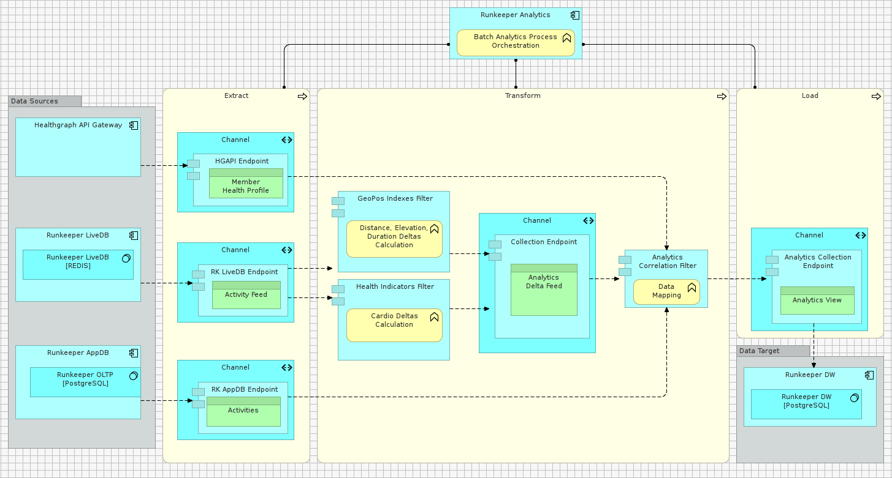

Objectives
In this Lab, we will build a few Architecture Views describing the design of a simple Analytics Dashboard for Runkeeper.com. This dashboard is the first application making use of data assets directly acquired from Healthgraph.com (operating as a separate company from Runkeeper.com).
LAB INTRODUCTION (Section D)
The figure below present the outlay of the Web Desktop version of the new Runkeeper.com “Achiever Analytics Dashboard”, reserved to ELITE members only.

The dashboard is composed of 4 main areas:
- Area 1 (Left): An interface to select the dates of Activities you wish to run Analytics on
- Area 2 (Top): The summary banner of key data indicators describing Key Performance Indicators (KPIs), based on selected dates,
- Area 3 (Top-Right): A terrain topology overlay of all activities performed, based on selected dates,
- Area 4 (Bottom-Right): A graph showing the variations of a specific data point (here elevation, but it could be heart beat, steps, etc.) over the total duration of all selected activities.
Note 1
The dashboard above present data pertaining to Running Activities only. Dashboard contents and graphics for other activities may slightly vary, but the principle remains the same.
Note 2
Red means a decrease in pace. Blue means in increase in pace.
To describe the design of the Analytics Dashboard, we limit ourselves to the creation of the following Architecture Views:
- In Section D.0 Context View
- In Section D.1 Behavioral View
- In Section D.2 Information View
- In Section D.3 Functional View
Note 3
The two most important decisions made about the Architecture we will describe in the next section are:
1.Performance by Design: an asynchronous batch analytics daemon continuously runs on Runkeeper's servers to perform the most data intensive calculations and prepare De-normalized data analytics views that the Dashboard can connect to
2.Data Source Abstraction: data from multiple sources (off-premise, and on-premise) is consolidated in one location), accessed through an indirection layer reducing coupling between front-end and back-end.
STEP D0 – Creating the CONTEXT VIEW
The purpose of this view is to outline the main elements at play in the design of our analytics dashboard:
- Who will interact with the dashboard, performing what kind of actions
- What will interact with the dashboard, performing what kind of actions
EXERCISE
-
In the Model Tree, under the View folder, create a new sub-folder named: “D - Analytics Dashboard”
-
In the Model Tree, under the View folder, create a new sub-folder named: “D0 - Context View”
-
Within the folder newly added above, create a new Model canvas named “D0a – System Context”
-
Clone the figure below
All User data candidate for Analytics is collected and correlated from 3 distinct sources of information: PostgreSQL (User Activity / Workouts data), REDIS (User Geo-positioning / Health Tracking data points) and HealthGraph (User Health Profile data).
Resulting datasets (prepared for Analytics Dashboard reporting) are then persisted in a single location which is the authoritative source for reporting, i.e. providing data that can be analyzed under a number of reporting dimensions.
EXERCISE
-
In the Model Tree, under the View folder named: “D0 – Context View”
-
Within the folder newly added above, create a new Model canvas named “D0b – System Features”
-
Clone the figure below
The architecture is composed of two main distinct components, running on different server processes, possibly on different servers, independently from one another.
STEP D1 – Creating the BEHAVIORAL VIEW
The purpose of this View is to outline:
- How data gets collected and prepared for purposes building analytics data sets
- How analytics data sets are served to users
D1a: DATA PREPARATION
A Data Preparation process is triggered every time a User uploads new data points (e.g. a new activity feed, a modification of heath profile). The result of the data preparation stores User Analytics Views into Runkeeper's Data Warehouse.
EXERCISE
-
In the Model Tree, under the View folder, create a new sub-folder named: “D - Analytics Dashboard”
-
In the Model Tree, under the View folder, create a new sub-folder named: “D1 - Behavioral View”
-
Within the folder newly added above, create a new Model canvas named “D1a – Data Preparation”
-
Clone the figure below
D1b: DASHBOARD RENDERING
To display render data analytics related to a set of selected dates, a number of reporting objects are generated from Runkeeper's Data Warehouse.
The Data Warehouse stores all essential analytics data points required to fulfill analytics requests of all ELITE members.
EXERCISE
-
In the Model Tree, under the View folder, create a new sub-folder named: “D - Analytics Dashboard”
-
In the Model Tree, under the View folder, create a new sub-folder named: “D1 - Behavioral View”
-
Within the folder newly added above, create a new Model canvas named “D1b – Dashboard Rendering”
-
Clone the figure below

STEP D2 – Creating the INFORMATION VIEW
The purpose of this View is to model:
- Data flow of the asynchronous Batch Analytics data preparation process
- Data flow of the synchronous request/response dashboard rendering process
Selected Data-driven Architectural Style: Data Warehousing ETL
Selected Architectural Patterns: Pipes & Filters, Batch Data Processing
EXERCISE
-
In the Model Tree, under the View folder, create a new sub-folder named: “D - Analytics Dashboard”
-
In the Model Tree, under the View folder, create a new sub-folder named: “D2 - Information View”
-
Within the folder newly added above, create a new Model canvas named “D2a – Batch Analytics Data Flow”
-
Clone the figure below

EXERCISE
-
In the Model Tree, under the View folder, create a new sub-folder named: “D - Analytics Dashboard”
-
In the Model Tree, under the View folder, create a new sub-folder named: “D2 - Information View”
-
Within the folder newly added above, create a new Model canvas named “D2b – Dashboard Rendering Data Flow”
-
Clone the figure below
STEP D3 – Creating the FUNCTIONAL VIEW(S) of our Analytics Dashboard
The purpose of this View is to outline:
- The structure of our design and grouping of key components
- How presentation components are abstracted data sources
Selected Application-driven Architectural Style: Layered Architecture – Relaxed Layering Variant.
Selected Architectural Patterns: Transfer Object, DAO (Data Access Object), Template View (MVC), Entity Aggregation.
EXERCISE
-
In the Model Tree, under the View folder, create a new sub-folder named: “D - Analytics Dashboard”
-
In the Model Tree, under the View folder, create a new sub-folder named: “D2 - Functional View”
-
Within the folder newly added above, create a new Model canvas named “D3a – Indirection Layers””
-
Clone the figure below
EXERCISE
-
In the Model Tree, under the View folder, create a new sub-folder named: “D - Analytics Dashboard”
-
In the Model Tree, under the View folder, create a new sub-folder named: “D3 - Functional View”
-
Within the folder newly added above, create a new Model canvas named “D3b – Data Provisioning”
-
Clone the figure below
Solution
This github repository contains the solution for this lab (i.e. lab 09):